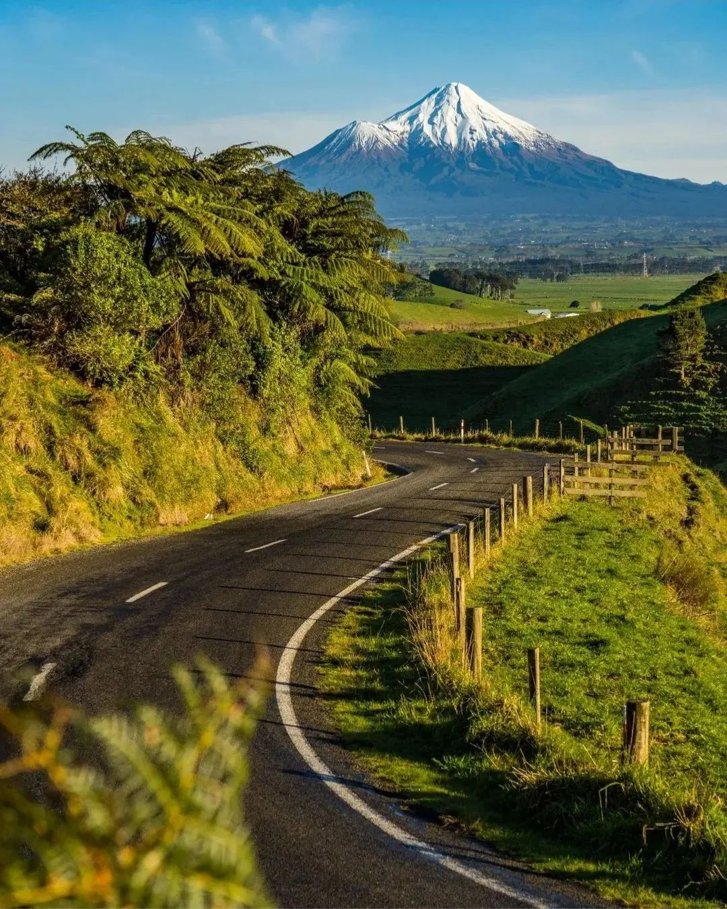
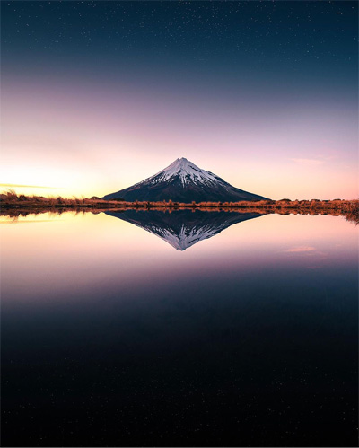
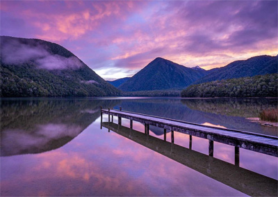
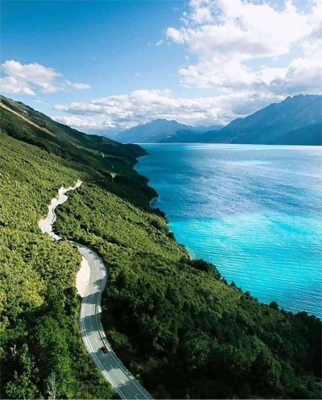
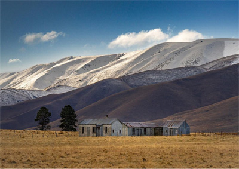
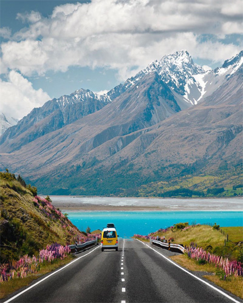
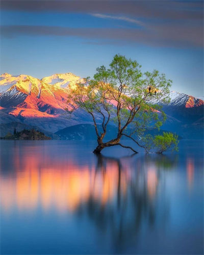
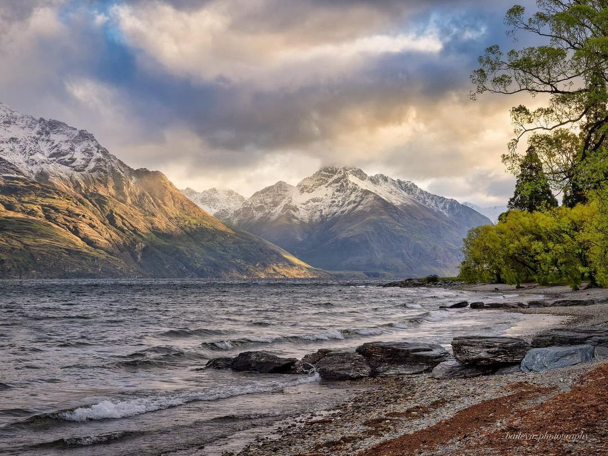
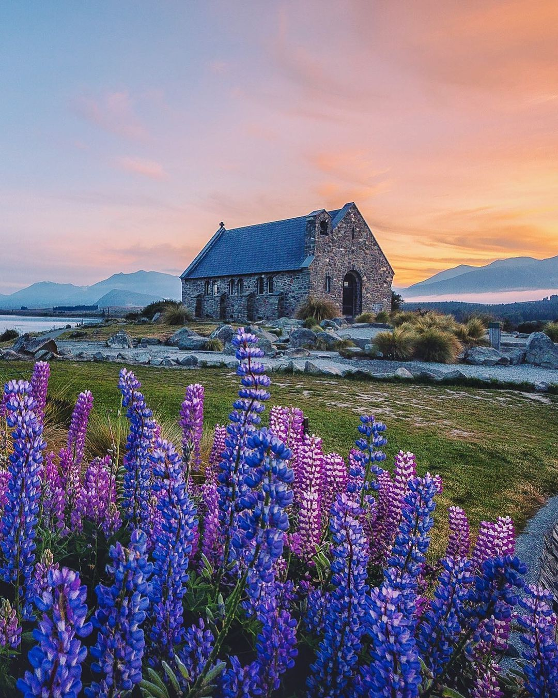

13% of Nature
in New Zealand is fully provided
big number of oxigen in the world
Sound, New Zealand
nature,
one of the most potencial
thing that we can meet in
New Zealand
is should be protected and
discovered to be enjoyed
forever
Kia Ora
WELCOME TO AOTEAROA
Welcome to Aotearoa, the land of the long white cloud, home to rich cultural diversity, breathtaking scenery and a history rooted in Maori heritage. In this corner of the world, the hospitality and welcoming spirit of its people intertwine with majestic nature, creating a unique and unforgettable experience for every visitor.
New Zealand invites you to explore its rugged lands and coastlines lapped by the Pacific Ocean and Tasman Sea. From the snow-capped peaks of the Southern Alps to the golden beaches of the north, every corner of this country offers a different adventure. Immerse yourself in Maori culture, discover its rich heritage, and indulge your senses with unique cuisine that fuses the traditional with the contemporary.
Discover the breathtaking New Zealand:
Centuries-old Maori Culture
Breathtaking Natural Landscapes
Unrivaled Outdoor Adventures
Innovative Gastronomy and Exquisite Wines
Charming Kiwi Hospitality
Our
Historical Roots
XIII - Arrival of the Maori
About a thousand years ago, the Maori, from Central Polynesia, made an extraordinary voyage across the vast Pacific Ocean in canoes, reaching the shores of what is now New Zealand. This daring voyage, guided by advanced knowledge of navigation and the stars, marked the beginning of one of the most amazing human migrations in history.
The Maori brought with them a rich cultural heritage that has left an indelible mark on New Zealand's history. Their legacy includes a network of deeply rooted oral traditions that transmit their worldview, stories and knowledge through generations. In addition, their mastery of traditional arts such as wood carving, weaving, basketry and facial tattoos known as "moko" reflect unparalleled artistic and craft skills.
1840 - The Treaty of Waitangi
In 1840, the Treaty of Waitangi was a significant milestone in New Zealand's history, establishing an agreement between Maori and British settlers, with the intention of establishing a cooperative relationship and protecting Maori rights to their lands and resources. This treaty was signed in multiple locations throughout New Zealand and is considered a pivotal document in the founding of the nation.
However, different interpretations and translations of the treaty in its Maori and English versions have led to disagreements and tensions throughout history. One area of contention has been the cession of land and rights. While the English version of the treaty gave the British Crown greater control over the lands, the Maori version emphasized the protection of Maori rights over their territories. This linguistic discrepancy has led to disputes and misunderstandings, impacting the relationship between Maori and non-Maori settlers over the years.
1860 - Otago gold rush
The gold rush that broke out in the Otago region in the mid-19th century marked a significant milestone in New Zealand history. The discovery of gold attracted thousands of fortune seekers from around the world, generating significant migration and transforming the Otago region.
This gold rush not only influenced the economic development and demographics of the country, but also left a lasting legacy in the architecture and culture of the region, still visible today. The town of Arrowtown, for example, retains its historic charm and offers visitors the opportunity to immerse themselves in the fascinating history of the Gold Rush.
Natural Wonders
National Parks
Discover
Unique Cities

Auckland
Auckland, the city of contrasts, combines a stunning cityscape with pristine beaches and dormant volcanoes. It is a paradise for lovers of culture and ethnic diversity.
Wellington
Known as the 'Windy City', Wellington is a cultural and political center. Its charm lies in its bohemian atmosphere, cafes, street art and panoramic views.

Christchurch
Christchurch, the 'Garden City', is reinventing itself after an earthquake. It offers a relaxed lifestyle, lush parks and a renaissance cultural scene.
Queenstown
Queenstown, the adventure capital, is a haven for extreme sports and outdoor activities. Surrounded by mountains, lakes and a vibrant atmosphere.
Dunedin
Dunedin, a Scottish gem in New Zealand, is home to Victorian architecture, a thriving student culture and incredible wildlife on the Otago Peninsula.
Rotorua
Rotorua, the heart of Maori culture and geothermal phenomena, offers hot springs, geysers and a unique cultural immersion in Maori history and traditions.
#NZMustDo
-

@EmilyExploresNZ
 Queenstown
Queenstown
-

@JackInKiwiLand
Christchurch
-

@AdventurousAvaNZ
Rotorua
-

@TravelingTomNZ
Queenstown
-

@WanderlustWillNZ
Christchurch
-

@ExploreEllaNZ
Dunedin
-

@DiscoveringDylanNZ
Rotorua
-

@SammyVisitsNZ
Queenstown
-

@JourneyingJaneNZ
Dunedin
-
@TrekkingTinaNZ
Dunedin
-

@RyanRoamsNZ
Auckland
-

@ExploringEricNZ
Auckland